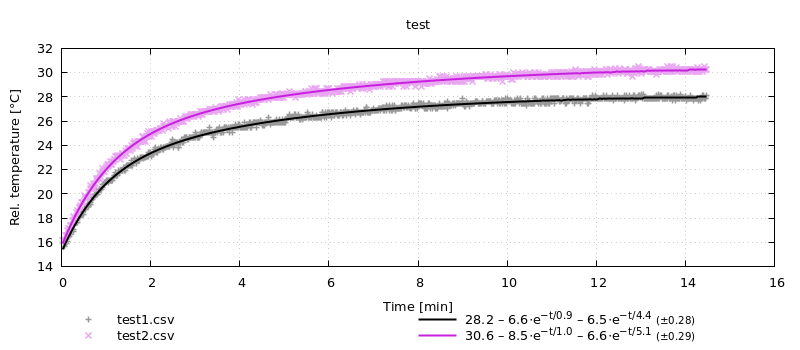
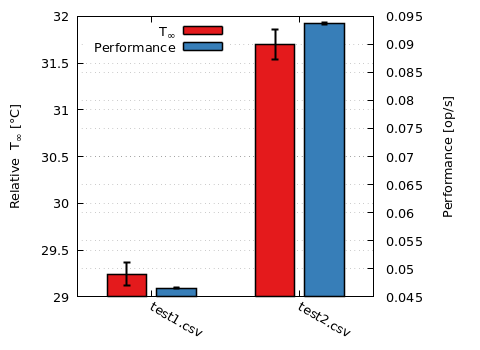

Thermobench.jl
Julia module for working with thermobench-produced CSV files.
Contents
Installation
Thermobench.jl can be installed using the Julia package manager. From the Julia REPL, type ] to enter the Pkg REPL mode and run:
pkg> add https://github.com/CTU-IIG/thermobench:juliaAlternatively, if you want to use the same versions of packages as the author of the package, run:
(@v1.6) pkg> activate /path/to/thermobench/julia
(Thermobench) pkg> instantiateUsage
Thermobench package supports plotting with Gnuplot.jl package so you will most likely need both packages:
using Thermobench, GnuplotYou can also create a shortcut T for accessing non-exported members of Thermobench package.
const T = ThermobenchHigh-level data processing and graphing
The simplest way to using the package is the multi_fit function. In the example below, it reads the data from a CSV file and fits a thermal model to it. The result can be directly plotted by Gnuplot.jl:
@gp multi_fit("test1.csv")You can pass multiple CSV files to multi_fit. The result is shown as a DataFrame, which makes it easy to compare the results. You can also specify additional keywords to control the operation. Below we use subtract to subtract ambient temperature from the data to fit, use_measurements to produce results with confidence intervals and use_cmpfit to use alternative fitting solver.
julia> mf = multi_fit(["test1.csv", "test2.csv"], subtract=:ambient, use_cmpfit=true, use_measurements=true)Thermobench.MultiFit: test 2×9 DataFrame Row │ name column rmse ops Tinf k1 ⋯ │ String Symbol Float64 Measurem… Measurem… Measurem… ⋯ ─────┼────────────────────────────────────────────────────────────────────────── 1 │ test1.csv CPU_0_temp 0.283474 0.046519±7.6e-5 28.24±0.1 -6.57±0.5 ⋯ 2 │ test2.csv CPU_0_temp 0.285696 0.0938±0.00014 30.65±0.14 -8.46±0.5 4 columns omittedjulia> @gp mf

In most cases, we are interested only in $T_∞$ parameters. These can be plot (and compared between multiple data sets) with plot_Tinf.
julia> mf2 = multi_fit(["test1.csv", "test2.csv"], :CPU_1_temp, name="CPU1", subtract=:ambient, use_cmpfit=true, use_measurements=true)Thermobench.MultiFit: CPU1 2×9 DataFrame Row │ name column rmse ops Tinf k1 ⋯ │ String Symbol Float64 Measurem… Measurem… Measurem… ⋯ ─────┼────────────────────────────────────────────────────────────────────────── 1 │ test1.csv CPU_1_temp 0.286691 0.046519±7.6e-5 29.25±0.12 -7.4±0.59 ⋯ 2 │ test2.csv CPU_1_temp 0.289158 0.0938±0.00014 31.7±0.16 -8.62±0.5 4 columns omittedjulia> @gp plot_Tinf(rename!(mf, "CPU0"), mf2) key="left"

Both $T_∞$ and benchmark performance can be plotted with plot_Tinf_and_ops:
julia> @gp plot_Tinf_and_ops(mf2) key="left"

Raw thermobench data
To access raw data from thermobench CSV files, use the Thermobench.read function:
julia> using DataFramesjulia> d = T.read("test1.csv");julia> dump(d, maxdepth=1)Thermobench.Data df: DataFrame name: String "test1.csv" meta: Dict{Any, Any}julia> first(d.df, 6)6×30 DataFrame Row │ time CPU_0_temp CPU_1_temp GPU_0_temp GPU_1_temp DRC_temp ⋯ │ Float64 Float64? Float64? Float64? Float64? Float64? ⋯ ─────┼────────────────────────────────────────────────────────────────────────── 1 │ 5.2376e-5 39.7 40.5 40.5 40.5 39.9 ⋯ 2 │ 0.00298869 39.7 40.5 40.5 40.5 39.9 3 │ 0.112669 missing missing missing missing missing 4 │ 1.00012 40.1 40.7 40.1 40.1 40.3 5 │ 2.00109 39.7 40.7 39.7 39.7 40.3 ⋯ 6 │ 2.16951 missing missing missing missing missing 24 columns omitted
In the example above, the data is available in d.df DataFrame, where you can manipulate them as you want. You can find a lot of examples in DataFrames.jl documentation.
In addition to using dataframe d.df directly, you can access individual columns via shortcut properties such as:
julia> d.CPU_0_temp |> x->first(x, 6)6-element Vector{Union{Missing, Float64}}: 39.7 39.7 missing 40.1 39.7 missing
To write (possibly modified) data to a file, use Thermobench.write function.
Plotting
You can plot the data by using directly the values from DataFrame d.df, but the plot(::Thermobench.Data) method makes it easier:
@gp plot(d, :CPU_0_temp) key="left"
@gp :- plot(d, :ambient, with="lines", title="Amb. temperature")Missing values and interpolation
If you want to get rid of missing data, you can select interesting columns and pass the dataframe through dropmissing:
julia> select(d.df, [:time, :CPU_0_temp]) |> dropmissing878×2 DataFrame Row │ time CPU_0_temp │ Float64 Float64 ─────┼────────────────────────── 1 │ 5.2376e-5 39.7 2 │ 0.00298869 39.7 3 │ 1.00012 40.1 4 │ 2.00109 39.7 5 │ 3.00061 40.5 6 │ 4.00057 40.3 7 │ 5.00051 40.1 8 │ 6.00049 40.5 ⋮ │ ⋮ ⋮ 872 │ 870.0 52.5 873 │ 871.001 52.5 874 │ 872.001 52.6 875 │ 873.001 52.5 876 │ 874.001 52.5 877 │ 875.001 52.6 878 │ 876.0 52.5 863 rows omitted
which is the same as:
julia> dropmissing(select(d.df, [:time, :CPU_0_temp]));
or
julia> using Pipe: @pipejulia> @pipe d.df |> select(_, [:time, :CPU_0_temp]) |> dropmissing(_);
Note that when you select all columns, you will likely end up with empty dataframe, because dropmissing keeps only rows with no missing values.
Alternatively, you can get rid of missing data by interpolating them with interpolate:
julia> interpolate(d)Thermobench.Data: Name: test1.csv 1092×30 DataFrame Row │ time CPU_0_temp CPU_1_temp GPU_0_temp GPU_1_temp DRC_temp ⋯ │ Float64 Float64? Float64? Float64? Float64? Float64? ⋯ ──────┼───────────────────────────────────────────────────────────────────────── 1 │ 5.2376e-5 39.7 40.5 40.5 40.5 39.9 ⋯ 2 │ 0.00298869 39.7 40.5 40.5 40.5 39.9 3 │ 0.112669 39.744 40.522 40.456 40.456 39.944 4 │ 1.00012 40.1 40.7 40.1 40.1 40.3 5 │ 2.00109 39.7 40.7 39.7 39.7 40.3 ⋯ 6 │ 2.16951 39.8348 40.7674 39.8348 39.8348 40.3 7 │ 3.00061 40.5 41.1 40.5 40.5 40.3 8 │ 4.00057 40.3 40.7 40.3 40.3 40.5 ⋮ │ ⋮ ⋮ ⋮ ⋮ ⋮ ⋮ ⋱ 1086 │ 870.851 52.5 53.43 52.5 52.5 52.1 ⋯ 1087 │ 871.001 52.5 53.4 52.5 52.5 52.1 1088 │ 872.001 52.6 53.6 52.6 52.6 52.1 1089 │ 873.001 52.5 53.4 52.5 52.5 52.1 1090 │ 874.001 52.5 53.4 52.5 52.5 52.1 ⋯ 1091 │ 875.001 52.6 53.4 52.6 52.6 52.1 1092 │ 876.0 52.5 53.2 52.5 52.5 52.1 24 columns and 1077 rows omitted
Other useful data manipulations
To filter out some rows, you can use:
julia> using DataFramesMetajulia> @linq d.df |> where(10.0 .< :time .< 13.0)5×30 DataFrame Row │ time CPU_0_temp CPU_1_temp GPU_0_temp GPU_1_temp DRC_temp PMI ⋯ │ Float64 Float64? Float64? Float64? Float64? Float64? Flo ⋯ ─────┼────────────────────────────────────────────────────────────────────────── 1 │ 10.0003 40.9 41.7 40.9 40.9 41.1 ⋯ 2 │ 10.2866 missing missing missing missing missing mis 3 │ 11.0007 40.9 41.7 40.9 40.9 41.3 4 │ 12.0006 41.1 41.9 41.1 41.1 41.1 5 │ 12.25 missing missing missing missing missing mis ⋯ 24 columns omitted
Reference
Thermobench.DataThermobench.DataThermobench.MultiFitDataFrames.rename!Thermobench.fitThermobench.interpolateThermobench.interpolate!Thermobench.multi_fitThermobench.normalize_units!Thermobench.ops_estThermobench.ops_per_secThermobench.plotThermobench.plotThermobench.plotThermobench.plot_TinfThermobench.plot_Tinf_and_opsThermobench.plot_barsThermobench.plot_fitThermobench.printfitThermobench.readThermobench.sample_mean_estThermobench.strip_units!Thermobench.thermocam_correct!Thermobench.writeThermobench.writeThermobench.@symarray
Thermobench.Data — Typemutable struct Data
df::DataFrame
name::String # label for plotting
meta::Dict
endData read from thermobench CSV file. You can access the actual data either via d.df (e.g. d.df.ambient) or via a shortcut d.ambient.
Thermobench.Data — MethodCopy existing Data d, but replace the DataFrame with df.
Thermobench.MultiFit — TypeStores results of processing of one or more thermobench CSV files.
The main data is stored in the result field.
DataFrames.rename! — Methodrename!(mf::MultiFit, name)Rename MultiFit data structure.
The name is often used as graph label so renaming can be used to set descriptive graph labels.
Thermobench.fit — Methodfit(
time_s::Vector{Float64},
data::Vector{Float64};
order::Int64 = 2,
p0 = nothing,
tau_bounds = [(1, 60*60)],
k_bounds = [(-120, 120)],
T_bounds = (0, 120),
use_cmpfit::Bool = true,
)Fit a thermal model to time series given by time_s and data. The thermal model has the form of
\[T(t) = T_∞ + \sum_{i=1}^{order}k_i⋅e^{-\frac{t}{τ_i}},\]
where T_∞, kᵢ and τᵢ are the coefficients found by this function.
If use_cmpfit is true (the default), use CMPFit.jl package rather than LsqFit.jl. LsqFit doesn't work well in constrained settings.
You can limit the values of fitted parameters with *_bounds parameters. Each bound is a tuple of lower and upper limit. T_bounds limits the T∞ parameter. tau_bounds and k_bounds limit the coefficients of exponential functions $k·e^{-t/τ}$. If you specify less tuples than the order of the model, the last limit will be repeated.
Example
julia> using StatsBase: coef
julia> d = Thermobench.read("test.csv");
julia> f = fit(d.df.time, d.df.CPU_0_temp);
julia> coef(f)
5-element Vector{Float64}:
53.000281131995216
-13.124669351494804
317.6295458318768
-8.162698170955293
59.36603736868179
julia> printfit(f)
"53.0 – 8.2⋅e^{−t/59.4} – 13.1⋅e^{−t/317.6}"Thermobench.interpolate! — Methodinterpolate!(d::Data)
interpolate!(df::AbstractDataFrame)In-place version of interpolate.
Thermobench.interpolate — Methodinterpolate(d::Data)
interpolate(df::AbstractDataFrame)Replace missing values with results of linear interpolation performed against the first column (time).
julia> x = DataFrame(t=[0.0, 1, 2, 3, 1000, 1001], v=[0.0, missing, missing, missing, 1000.0, missing])
6×2 DataFrame
Row │ t v
│ Float64 Float64?
─────┼────────────────────
1 │ 0.0 0.0
2 │ 1.0 missing
3 │ 2.0 missing
4 │ 3.0 missing
5 │ 1000.0 1000.0
6 │ 1001.0 missing
julia> interpolate(x)
6×2 DataFrame
Row │ t v
│ Float64 Float64?
─────┼────────────────────
1 │ 0.0 0.0
2 │ 1.0 1.0
3 │ 2.0 2.0
4 │ 3.0 3.0
5 │ 1000.0 1000.0
6 │ 1001.0 missing
Thermobench.multi_fit — Functionmulti_fit(sources, columns = :CPU_0_temp;
name = nothing,
timecol = :time,
use_measurements = false,
order::Int64 = 2,
subtract = nothing,
kwargs...)::MultiFitCall fit() for all sources and report the results (coefficients etc.) in DataFrame. When use_measurements is true, report coefficients with their confidence intervals as Measurement objects.
subtract specifies the column (symbol), which is subtracted from data after interpolating its values with interpolate. This intended for subtraction of ambient temperature.
julia> multi_fit("test.csv", [:CPU_0_temp :CPU_1_temp])
Thermobench.MultiFit: test.csv
2×9 DataFrame
Row │ name column rmse ops Tinf k1 t ⋯
│ String Symbol Float64 Measurem… Float64 Float64 F ⋯
─────┼──────────────────────────────────────────────────────────────────────────
1 │ test.csv CPU_0_temp 0.308966 3.9364e8±280000.0 53.0003 -8.1627 5 ⋯
2 │ test.csv CPU_1_temp 0.288719 3.9364e8±280000.0 54.0527 -7.17072 5
3 columns omittedThermobench.normalize_units! — Methodnormalize_units!(d::Data)Normalize units to seconds and °C.
Thermobench.ops_est — Functionops_est(d::Data, col_idx = r"work_done")::MeasurementReturn sum of operations per second estimations calculated from multiple work_done columns. This is most often used for calculating "performance" of all CPUs together. The result is obtained by combining sample_mean_est and ops_per_sec for all matching columns.
Optional arguments
drop_infargument is passed toops_per_secfunction,alphais passed tosample_mean_est.
Example
julia> ops_est(Thermobench.read("test.csv"))
3.9364e8 ± 280000.0Thermobench.ops_per_sec — Functionops_per_sec(d::Data, column = :work_done)::Vector{Float64}Return a vector of operations per second calculated by combining information from time and work_done-type column identified with column.
Optional arguments
decimate::Int64- Use only every n-th "work_done" row (n =decimate). Defaults to 1. Special value 0 means use only first and last value.drop_inf- If true, infinity values (if any) are removed from the resulting vector. Defaults to false.
julia> ops_per_sec(Thermobench.read("test.csv"), :CPU0_work_done) |> ops->ops[1:3]
3-element Vector{Float64}:
5.499226671249357e7
5.498016096730722e7
5.4862923057965025e7Thermobench.plot — FunctionPlot various Thermobench data types.
Thermobench.plot — Functionplot(d::Data, columns = :CPU_0_temp; kwargs...)Plot raw values from Thermobench .csv file stored in d. data.
Arguments
columns: Column or array of columns to plot (columns are specified as Julia symbols)with: Gnuplot's "with" value – chooses how the data is plot. Defaults to"points".title: Custom title for all plotted columns. Default title is column title of each plot column.enhanced: Use Gnuplot enhanced markup fortitle. Default isfalse.minutes::Bool=false: chooses between seconds and minutes on the x-axis.
Thermobench.plot — Methodplot(mf::MultiFit; kwargs...)::Vector{Gnuplot.PlotElement}Plot MultiFit data.
Arguments
minutes::Bool=true: chooses between seconds and minutes on the x-axis.pt_titles::Bool=truewhether to include titles of measured data points in separate legend column.pt_decim::Int=1draw only everypt_decim-th measured data point. This can be used to reduce the size of vector image formats.pt_size::Real=1size of measured data points.pt_saturation::Real=0.4intensity of points (0 is white, 1 is saturate)stddev::Bool=truewhether to include root-mean-square error of the fit in the legend (as (±xxx)).models::Bool=truewhether show thermal model expressions in the key.
Thermobench.plot_Tinf — Methodplot_Tinf(mfs::MultiFit...; kwargs...)::Vector{Gnuplot.PlotElement}Plot $T_∞$ as bargraphs. Multiple data sets can be passed as arguments to compare them. kwargs are passed to Thermobench.plot_bars.
Thermobench.plot_Tinf_and_ops — Methodplot_Tinf_and_ops(mf::MultiFit; kwargs...)::Vector{Gnuplot.PlotElement}Plot $T_∞$ and performance (ops per second from ops_est) as a bargraph.
Arguments
perf_str: Title to show for the performance legend and y-axis. Default is "Performance".
Thermobench.plot_bars — Methodplot_bars(df::AbstractDataFrame; kwargs...)::Vector{Gnuplot.PlotElement}Generic helper function to plot bar graphs with Gnuplot.jl.
Arguments
df: data to plot. The first column should contains text labels, the other columns the plotted values. If the values are ofMeasurementtype, they will be plotted with errorbars style, unless overridden withhist_style.box_width=0.8: the width of the boxes. One means that the boxes touch each other.gap::Union{Int64,Nothing}=nothing: The gap between bar clusters. Ifnothing, it is set automatically depending on the number of bars in the cluster; to zero for one bar in the cluster, to 1 for multiple bars.hist_style=nothing: histogram style — see Gnuplot documentation.fill_style="solid 1 border -1": fill style — see Gnuplot documentation.errorbars="": errorbars style — see Gnuplot documentation.label_rot=-30: label rotation angle; if > 0, align label to right.label_enhanced=false: whether to apply Gnuplot enhanced formatting to labels.key_enhanced=false: whether to apply Gnuplot enhanced formatting to data keys.y2cols=[]: Columns (specified as symbols) which should be plot against y2 axis.linetypes=1:ncol(df)-1: Line types (colors) used for different bars
Example
julia> using Measurements, Gnuplot
julia> df = DataFrame(names=["very long label", "b", "c"],
temp=10:12,
speed=collect(4:-1:2) .± 1)
3×3 DataFrame
Row │ names temp speed
│ String Int64 Measurem…
─────┼───────────────────────────────────
1 │ very long label 10 4.0±1.0
2 │ b 11 3.0±1.0
3 │ c 12 2.0±1.0
julia> @gp Thermobench.plot_bars(df)
Thermobench.plot_fit — Functionplot_fit(sources, columns = :CPU_0_temp;
timecol = :time,
kwargs...)Call fit for all sources and columns and produce a graph using gnuplot.
This function is now superseded by multi_fit, which offers more possibilities for plotting the data.
sources can be a file name (String) or a DataFrame or an array of these.
timecol is the columns with time of measurement.
Setting plotexp to true causes the individual fitted exponentials to be plotted in addition to the compete fitted function.
Other kwargs are passed to fit.
Example
julia> plot_fit("test.csv", [:CPU_0_temp :CPU_1_temp], order=2);
Thermobench.printfit — Methodprintfit(fit; minutes = false)Return the fitted function (result of fit) as Gnuplot enhanced string. Time constants (τᵢ) are sorted from smallest to largest.
Example
julia> f = Thermobench.fit(collect(0.0:10:50.0), [0, 6, 6.5, 6.8, 7, 7]);
julia> printfit(f)
"7.1 – 5.0⋅e^{−t/1.0} – 2.1⋅e^{−t/16.1}"Thermobench.read — Methodread(source; normalizeunits=true, stripunits=true, name=nothing, kwargs...)::DataRead thermobech CSV file source and return it as Thermobench.Data.
The source can be a file name or an IO stream. By default units are normalized with normalize_units! and stripped from column names with strip_units!. name is stored in the resulting data structure and often serves as a graph label. If name is not specified it is set (if possible) to the basename of the CSV file. kwargs are stored in the resulting structure as metadata.
Note that future versions of this function may have new arguments that will conflict with your metadata in kwargs. The new arguments will not contain _ in their names so you can use this character in the keywords to ensure forward compatibility.
Thermobench.sample_mean_est — Methodsample_mean_est(sample; alpha = 0.05)::MeasurementCalculate sample mean estimation and its confidence interval at alpha significance level, e.g. alpha=0.05 for 95% confidence. Return Measurement value.
Example
julia> sample_mean_est([1,2,3])
2.0 ± 4.3Thermobench.strip_units! — Methodstrip_units!(d::Data)Strip unit names from DataFrame column names.
Example
julia> d = Thermobench.read("test.csv", stripunits=false);
julia> names(d.df)[1:3]
3-element Vector{String}:
"time_s"
"CPU_0_temp_°C"
"CPU_1_temp_°C"
julia> Thermobench.strip_units!(d)
julia> names(d.df)[1:3]
3-element Vector{String}:
"time"
"CPU_0_temp"
"CPU_1_temp"Thermobench.thermocam_correct! — Methodthermocam_correct!(d::Data)Estimate correction for thermocamera temperatures and apply it. Return the correction coefficients.
Correction is calculated from CPU_0_temp and cam_cpu columns. This and the names of modified columns are currently hard coded.
Thermobench.write — Methodwrite(file, mf::MultiFit)Write multi_fit() results to a CSV file file.
Thermobench.write — Methodwrite(file, d::Data)
d |> write(file)Write raw thermobench data d to file named file.
julia> const T = Thermobench;
julia> T.read("test.csv") |> interpolate! |> T.write("interpolated.csv");
Thermobench.@symarray — MacroConstruct array of symbols from arguments.
Useful for constructing column names, e.g.,
julia> @symarray Cortex_A57_temp Denver2_temp
2-element Vector{Symbol}:
:Cortex_A57_temp
:Denver2_temp